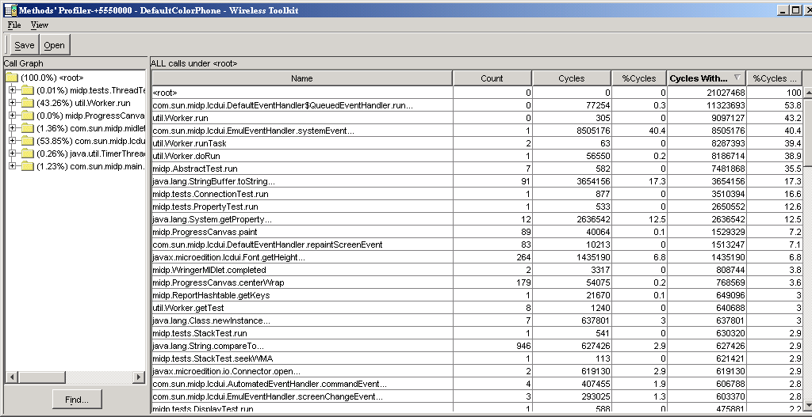
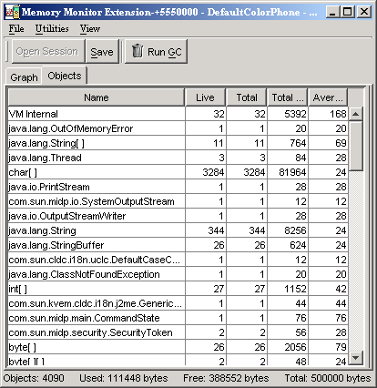

|
|
The J2ME Wireless Toolkit provides several tools to monitor the behavior of your applications. These tools are helpful in debugging and optimizing your code.
The profiler keeps track of every method in your application. For a particular run, it figures out how much time was spent in each method and how many times each method was called. After you finish running your application and shut down the emulator, the profiler pops up, allowing you to browse through the method call information.
To turn on the profiler, choose Edit > Preferences... from the KToolbar menu. Click on the Monitor tab. If you are interested in seeing profiling information for all the system implementation methods, check Show System Classes. Otherwise, the profiler shows only system methods that contain calls to your application methods.
Now run your application by clicking on the Run button. Interact with your application as you normally would. When you’re finished, shut down the emulator. The profiler pops up with information about all the method calls in your application.

The profiler displays two types of information:
The call graph shows a hierarchy of method calls. Methods that call other methods are shown as folders. Double-click on a method to open it and see the methods it calls. Methods that do not call any other method are shown as gray circles.
You can search for a particular class or method name. Click on Find... and fill in a name. The search is performed from the current selection in the call graph to the end. If you want to search the entire call graph, check Wrap before you click on the Find button.
As you click on different nodes in the call graph, the right side of the profiler shows details about the methods for that node.
The right side of the profiler window displays detailed information about methods. You can see the method name, the number of times it was called, and the amount of time that the emualtor spent in the method. The execution time is described in four distinct ways:
Click on any column to sort by that column. Click a second time to switch the sort between ascending and descending.
The right pane shows the methods contained in the currently selected node in the call graph. If you want to see every method, click on the <root> node in the call graph.
To save your profiler session, click on the Save button in the profiler window. Choose a file name.
To load a profiler session, choose File > Utilities... from the KToolbar menu. Click on Open Session in the Profiler box. When you select a file, the profiler window appears with all the session information.
Memory is scarce on many MIDP devices. The J2ME Wireless Toolkit includes a memory monitor that makes it easy to examine the memory usage of your application. You can see the total memory used by your application and a detailed listing of the memory usage per object.
To turn on the memory monitor, choose Edit > Preferences... from the KToolbar menu. Click on the Monitor tab. Check Enable Memory Monitor.
Next time you run the emulator, the memory monitor window pops up, displaying a graph of your application’s memory usage over time. The memory monitor slows down your application startup because every object created is recorded.
The memory monitor graph shows the following information:
Remember, you can modify the heap size using the Storage tab of the KToolbar preferences. See Chapter 3, “Working With Projects,” for details.
To request the system to perform a garbage collection, click on Run GC.
To see details about the objects in your application, click on the Objects tab in the memory monitor window.

You’ll see a table with the following columns:
Click on any column header to sort on that column.
You can search for a specific class name by choosing View > Find... from the memory monitor window menu.
To save your memory monitor session, click on the Save button. Choose a file name.
To load a memory monitor session, choose File > Utilities... from the KToolbar menu. Click on Open Session in the Memory Monitor box. When you select a file, the memory monitor window appears with all the session information.
MIDP applications, at a minimum, are capable of HTTP network connections, but many other types of network connections are also possible. The network monitor provides a convenient way to see the information your application is sending and receiving on the network. This is helpful if you are debugging network interactions or looking for ways to optimize network traffic.
To turn on the network monitor, choose Edit > Preferences... from the KToolbar menu. Click on the Monitor tab. Check Enable Network Monitoring.
Next time you run the emulator, the network monitor window pops up.
When your application makes any type of network connection, information about the connection is captured and displayed. The figure shows two HTTP requests and responses.
The display on the left side shows a hierarchy of messages and message pieces. Click on a message or a portion of a message to see details in the right side of the network monitor.
Message bodies are shown as raw hexadecimal values and the equivalent text.
Filters are useful for examining some subset of the total network traffic. Filter settings are specific to the network protocol used.
Press the Filter Settings button to use the filter. Change the filter settings to suit your needs.
When you are done entering filter settings, press OK to return to the network monitor. The Filter checkbox is checked, indicating that a filter is in use. To disable the filter and see all messages, uncheck the checkbox.
To arrange the message tree in a particular order, click on the Sort By combo box and choose a criteria.
Sorting parameters are dependent on the message protocol you choose. For instance, sorting by time is not relevant for socket messages.
To save your network monitor session, choose File > Save or File > Save As... from the network monitor window menu. Choose a file name.
To load a network monitor session, choose File > Utilities... from the KToolbar menu. Click on Open Session in the Network Monitor box. When you select a file, the network monitor window appears with all the session information.
To remove all messages from the network monitor, choose Edit > Clear from the network monitor menu.
|
|
J2ME Wireless Toolkit User's Guide J2ME Wireless Toolkit 2.2 |
Copyright © 2004 Sun Microsystems, Inc. All rights reserved. Use is subject to the license terms.